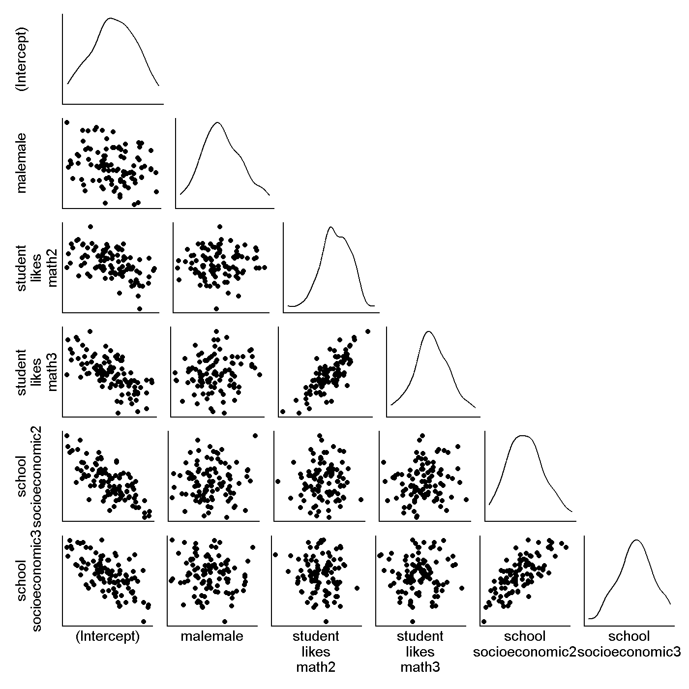
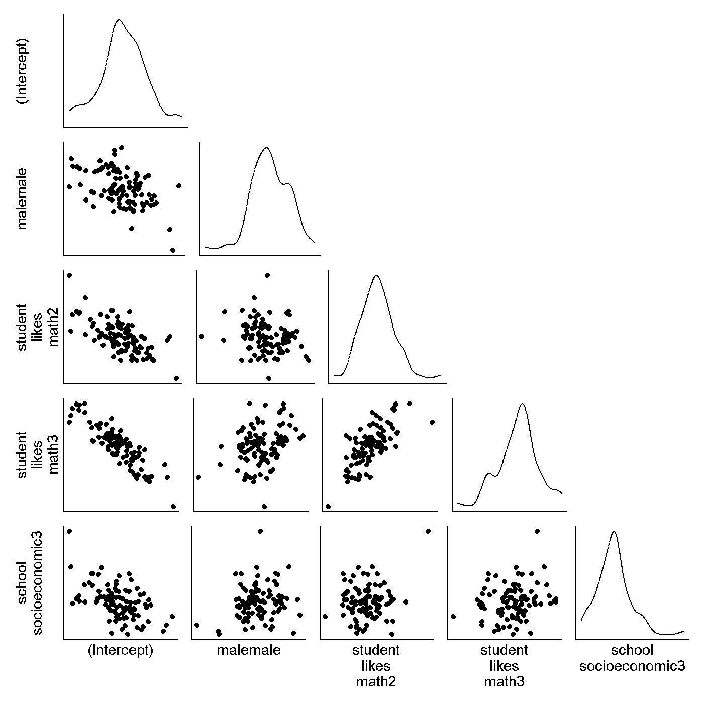

Code
library(tidyverse)
library(haven)
library(gt)Empirical Identifiability With Multilevel Models
Jess Helmer
February 24, 2026
Not writing formally yet.
In this project, we want to try to identify empirical diagnostic criteria for poorly identified models and demonstrate this with a couple examples in different frameworks. I will be working on this goal in the context of multilevel models.
Multilevel models can have issues with identification just like any other. These often show up as model convergence issues when trying to fit a model, especially those with many varying effects. Researchers then might cite the lack of model convergence as their reason for not proceeding with that model, but the underlying issue may really be1 one of model identifiability. Model convergence alone is not the greatest reason to put aside a model2, but being able to point to a lack of identifiability may be more constructive—at least acknowledging the underlying reason why the model did not converge.
Our high-level strategy here is to examine the properties of well- and poorly-identified models to identify differences that are therefore indicative of poor identification. Using a large dataset, we will first fit a model of interest, assuming that the size of the dataset will mean the model is identified. For the most relevance, the model of interest might ideally be one known to be prone to identification issues. Then, we will induce a lack of identifiability by subsetting the dataset into smaller versions and fitting the model of interest with the subsets. We will compare the identified and unidentified models by examining bootstrapped sampling distributions of their estimates and convergence warnings.
We will use publicly available data from the Trends in International Mathematics and Science Study (TIMSS) in this example. This large dataset contains lots of information on student, teacher, and school variables. We will use the 2023 data for 8th graders in the United States.
load(here::here("..", "Data", "TIMSS", "bsgusam8.rdata")) # student context data
load(here::here("..", "Data", "TIMSS", "bcgusam8.rdata")) # school context data
dat <- BSGUSAM8 |> select(school_id = IDSCHOOL, class_id = IDCLASS, student_id = IDSTUD,
starts_with("BSMMAT0"), sex = ITSEX, student_likes_math = BSDGSLM) |>
rename_with(~ paste0("math_pv_", parse_number(.x)), starts_with("BSMMAT0")) |>
left_join(BCGUSAM8 |>
select(school_id = IDSCHOOL, school_socioeconomic = BCDGSBC),
by = "school_id") |>
mutate(across(everything(), ~ case_when(.x == attr(.x, "na_values") ~ NA,
.default = .x)),
across(c(student_likes_math, school_socioeconomic), ~ factor(.x, ordered = F)),
male = factor(sex, levels = 1:2, labels = c("female", "male"))) |>
zap_labels() |>
select(-sex) |>
drop_na()
n_schools <- dat |> pull(school_id) |> unique() |> length()
n_students <- dat |> pull(student_id) |> unique() |> length()
n_info <- dat |>
summarize(.by = school_id,
n_students = n()) |>
summarize(mean_n_students = mean(n_students),
sd_n_students = sd(n_students),
min_n_students = min(n_students),
max_n_students = max(n_students))
dat |>
select(-c(school_id, class_id, student_id)) |>
mutate(school_socioeconomic = factor(school_socioeconomic,
labels = c("1" = "More Affluent",
"2" = "Neither More Affluent nor More Disadvantaged",
"3" = "More Disadvantaged")),
student_likes_math = factor(student_likes_math,
labels = c("1" = "Very Much Like Learning Mathematics",
"2" = "Somewhat Like Learning Mathematics",
"3" = "Do Not Like Learning Mathematics")),
male = factor(male,
labels = c("male" = "Male",
"female" = "Female"))) |>
gtsummary::tbl_summary(label = list(student_likes_math = "Student Likes Math",
school_socioeconomic = "School Socioeconomic Status",
male = "Gender")) |>
gtsummary::as_gt() |>
gt::tab_footnote("The plausible values are five imputed values for each student's score. I think ideally these would be modeled in an imputation way, but for now I've just used the 1st PV as the outcome.") |>
gt::tab_options(table.width = pct(66))| Characteristic | N = 7,0271 |
|---|---|
| 1ST PLAUSIBLE VALUE MATHEMATICS | 493 (429, 560) |
| 2ND PLAUSIBLE VALUE MATHEMATICS | 493 (429, 561) |
| 3RD PLAUSIBLE VALUE MATHEMATICS | 494 (428, 562) |
| 4TH PLAUSIBLE VALUE MATHEMATICS | 492 (427, 561) |
| 5TH PLAUSIBLE VALUE MATHEMATICS | 493 (428, 562) |
| Student Likes Math | |
| Very Much Like Learning Mathematics | 1,027 (15%) |
| Somewhat Like Learning Mathematics | 2,365 (34%) |
| Do Not Like Learning Mathematics | 3,635 (52%) |
| School Socioeconomic Status | |
| More Affluent | 840 (12%) |
| Neither More Affluent nor More Disadvantaged | 2,602 (37%) |
| More Disadvantaged | 3,585 (51%) |
| Gender | |
| Male | 3,449 (49%) |
| Female | 3,578 (51%) |
| The plausible values are five imputed values for each student's score. I think ideally these would be modeled in an imputation way, but for now I've just used the 1st PV as the outcome. | |
| 1 Median (Q1, Q3); n (%) | |
The full dataset contains complete data (on the variables in the model) for 189 schools, 402 classrooms, and 7027 students.
| Students Per School | |||
| Mean | SD | Min | Max |
|---|---|---|---|
| 37.18 | 11.55 | 4.00 | 66.00 |
On average, each school has 37.18 students. Three schools have less than 10 students (4, 5, and 6 students).
As an example model of interest, we can examine the population effects of student gender, how much students report liking math, and school socioeconomic status on student math achievement scores with a two-level model of students nested within schools. We can also examine whether the student-level effects of gender and reporting liking math effects vary among schools, for two varying slope terms.
We can represent the unconditional form of this model as
and the conditional form of this model as
.
If you’ll indulge my trying to practice translating these things into a distributional form.
Or, centered3 parameterization for the covariance matrix.
\[ \begin{bmatrix} \alpha_j \\ {\beta_j}_{female}\\ {\beta_j}_{likesMath} \end{bmatrix} \sim \mathcal{MVN}( \begin{bmatrix} \bar{\alpha} \\ \bar{\beta}_{female} \\ \bar{\beta}_{likesMath} \end{bmatrix}, \Sigma= \begin{bmatrix} {\tau}_{\alpha}^2 & \tau_{\alpha \beta_{female}} & \tau_{\alpha \beta_{likesMath}} \\ \tau_{\beta_{female} \alpha} & {\tau}_{\beta_{female}}^2 & \tau_{\beta_{female}\beta_{likesMath}} \\ \tau_{\beta_{likesMath} \alpha} & \tau_{\beta_{likesMath} \beta_{female}} & {\tau}_{\beta_{likesMath}}^2 \end{bmatrix}) \]
Because this dataset is so large, we can assume that the model fit on the full dataset is well-identified. We can then manipulate identifiability by randomly subsetting the data into smaller datasets. This represents what smaller research teams might be more likely to encounter in their work.
We still need to decide what the sample sizes of the smaller datasets should be, considering both number of schools and number of students within schools.
After manipulating identifiability, we will examine how the model reacts to having fewer observations with which to estimate its parameters. As one approach to empirically diagnosing poor identifiability, we will examine bootstrapped sampling distributions for parameters to examine them for issues. We will also track warnings that the model did not converge.
We migh also be able to show that by moving to a Bayesian framework with even gentle priors, identifiability issues are reduced.
{lme4} → {brms} with flat priors → {brms} with weakly informative priors? Or {lme4} → {brms} with weakly informative priors.Just starting to build up the code for this.
Below are the distributions and correlations for the bootstrapped parameter estimates (100 bootstraps) for the model fit on the full data. Just displaying fixed effects right now to get started (so not the more interesting pieces yet I guess).
bootstr <- dat |>
# filter(school_id %in% sample(school_id, 4)) |>
# slice_sample(by = school_id, n = 8) |>
modelr::bootstrap(n_bootstraps, id = "id")
bootres <- bootstr |>
mutate(lm = map(strap, ~ lme4::lmer(math_pv_1 ~ male + student_likes_math + school_socioeconomic +
(male + student_likes_math | school_id),
data = .x)),
tidy = map(lm, broom.mixed::tidy),
opt_warnings = map_chr(lm,
~ ifelse(.x |> pluck("optinfo") |> pluck("warnings") |> length() == 0, NA,
.x |> pluck("optinfo") |> pluck("warnings"))),
lme4_warnings = map_chr(lm,
~ ifelse(.x |> pluck("optinfo") |> pluck("conv") |> pluck("lme4") |>
pluck("messages") |> pluck(1) |> is_null(), NA,
.x |> pluck("optinfo") |> pluck("conv") |> pluck("lme4") |>
pluck("messages") |> pluck(1))))
bootest <- bootres |>
pull(tidy) |>
map2(seq(1, bootres |> pull(id) |> parse_number() |> max()),
~ mutate(.x, iter = .y)) |>
list_rbind() |>
select(group, term, estimate, iter) terms <- bootest |> pull(term) |> unique() |> head(6)
imap(terms, \(yterm, yid_term)
imap(terms |> head(yid_term),
\(xterm, xid_term) if (xterm != yterm){
bootest |>
filter(term == xterm | term == yterm) |>
pivot_wider(names_from = term, values_from = estimate) |>
ggplot(aes(x = !!sym(xterm), y = !!sym(yterm))) +
geom_point() +
scale_y_continuous(breaks = NULL) +
scale_x_continuous(breaks = NULL) +
labs(x = if (yid_term == length(terms)) xterm |> str_replace_all("_", " ") |> str_wrap(10) else NULL,
y = yterm |> str_replace_all("_", " ") |> str_wrap(10))}
else {bootest |>
filter(term == yterm) |>
ggplot(aes(x = estimate)) +
geom_density() +
scale_y_continuous(breaks = NULL) +
scale_x_continuous(breaks = NULL) +
labs(x = if (yid_term == length(terms)) xterm |> str_replace_all("_", " ") |> str_wrap(10) else NULL,
y = yterm |> str_replace_all("_", " ") |> str_wrap(10))}) |>
patchwork::wrap_plots(axis_titles = "collect", nrow = 1, widths = rep(1, length(terms))) &
theme_classic()
) |>
patchwork::wrap_plots(axis_titles = "collect", ncol = 1, heights = rep(1, length(terms))) 
And here’s the same thing with a subset of 5 schools and 10 students within each school.
bootstr <- dat |>
filter(school_id %in% sample(school_id, 5)) |>
slice_sample(by = school_id, n = 10) |>
modelr::bootstrap(n_bootstraps, id = "id")
bootres <- bootstr |>
mutate(lm = map(strap, ~ lme4::lmer(math_pv_1 ~ male + student_likes_math + school_socioeconomic +
(male + student_likes_math | school_id),
data = .x)),
tidy = map(lm, broom.mixed::tidy),
opt_warnings = map_chr(lm,
~ ifelse(.x |> pluck("optinfo") |> pluck("warnings") |> length() == 0, NA,
.x |> pluck("optinfo") |> pluck("warnings"))),
lme4_warnings = map_chr(lm,
~ ifelse(.x |> pluck("optinfo") |> pluck("conv") |> pluck("lme4") |>
pluck("messages") |> pluck(1) |> is_null(), NA,
.x |> pluck("optinfo") |> pluck("conv") |> pluck("lme4") |>
pluck("messages") |> pluck(1))))
bootest <- bootres |>
pull(tidy) |>
map2(seq(1, bootres |> pull(id) |> parse_number() |> max()),
~ mutate(.x, iter = .y)) |>
list_rbind() |>
select(group, term, estimate, iter) terms <- bootest |> filter(str_detect(term, dat |> names() |> paste(collapse = "|")) |
str_detect(term, "Intercept")) |>
filter(!str_detect(term, "sd|cor")) |>
pull(term) |> unique()
imap(terms, \(yterm, yid_term)
imap(terms |> head(yid_term),
\(xterm, xid_term) if (xterm != yterm){
bootest |>
filter(term == xterm | term == yterm) |>
pivot_wider(names_from = term, values_from = estimate) |>
ggplot(aes(x = !!sym(xterm), y = !!sym(yterm))) +
geom_point() +
scale_y_continuous(breaks = NULL) +
scale_x_continuous(breaks = NULL) +
labs(x = if (yid_term == length(terms)) xterm |> str_replace_all("_", " ") |> str_wrap(10) else NULL,
y = yterm |> str_replace_all("_", " ") |> str_wrap(10))}
else {bootest |>
filter(term == yterm) |>
ggplot(aes(x = estimate)) +
geom_density() +
scale_y_continuous(breaks = NULL) +
scale_x_continuous(breaks = NULL) +
labs(x = if (yid_term == length(terms)) xterm |> str_replace_all("_", " ") |> str_wrap(10) else NULL,
y = yterm |> str_replace_all("_", " ") |> str_wrap(10))}) |>
patchwork::wrap_plots(axis_titles = "collect", nrow = 1, widths = rep(1, length(terms))) &
theme_classic()
) |>
patchwork::wrap_plots(axis_titles = "collect", ncol = 1, heights = rep(1, length(terms))) 
terms <- bootest |> pull(term) |> unique() |> head(3)
imap(terms, \(yterm, yid_term)
imap(terms |> head(yid_term),
\(xterm, xid_term) if (xterm == yterm) {
bootest |>
filter(term == xterm) |>
ggplot(aes(x = estimate)) +
geom_density() +
labs(x = xterm, y = xterm) +
theme(aspect.ratio = 1)
} else {
bootest |>
filter(term == xterm | term == yterm) |>
pivot_wider(names_from = term, values_from = estimate) |>
ggplot(aes(x = !!sym(xterm), y = !!sym(yterm))) +
geom_point() +
labs(x = xterm, y = yterm) +
theme(aspect.ratio = 1)
}) |>
patchwork::wrap_plots(ncol = length(terms), byrow = T, axis_titles = "collect")
)
yid_term <- 3
yterm <- terms[yid_term]
map(terms |> head(yid_term),
\(xterm) if (xterm != yterm){
bootest |>
filter(term == xterm | term == yterm) |>
pivot_wider(names_from = term, values_from = estimate) |>
ggplot(aes(x = !!sym(xterm), y = !!sym(yterm))) +
geom_point() +
labs(x = xterm, y = yterm)}
else {bootest |>
filter(term == yterm) |>
ggplot(aes(x = estimate)) +
geom_density() +
labs(x = yterm, y = yterm)}) |>
patchwork::wrap_plots(axis_titles = "collect")
map(iris$Species |> unique(),
\(sp) if (sp != "setosa")
{iris |>
filter(Species == "setosa" | Species == sp) |>
ggplot(aes(x = Petal.Length, y = Sepal.Length)) +
geom_point()
} else
{iris |>
filter(Species == "setosa") |>
ggplot(aes(x = Petal.Length, y = Sepal.Length)) +
geom_point()}) |>
patchwork::wrap_plots(axis_titles = "collect")
map(iris$Species |> unique(),
\(sp) iris |>
filter(Species == "setosa" | Species == sp) |>
ggplot(aes(x = Petal.Length, y = Sepal.Length)) +
geom_point()) |>
patchwork::wrap_plots(axis_titles = "collect") &
theme_classic()
# expand_grid(x = terms, y = terms) |>
# pmap(\(x, y) if (x == y) {
# bootest |>
# filter(term == x) |>
# ggplot(aes(x = estimate)) +
# geom_density() +
# labs(x = x, y = x)
# } else {
# bootest |>
# filter(term == x | term == y) |>
# pivot_wider(names_from = term, values_from = estimate) |>
# ggplot(aes(x = !!sym(x), y = !!sym(y))) +
# geom_point()+
# labs(x = x, y = y)
# }) |>
# patchwork::wrap_plots(axis_titles = "collect", guides = "collect", byrow = F) &
# theme(aspect.ratio = 1)
#
# bootest |>
# filter(term == "(Intercept)" | term == y) |>
# pivot_wider(names_from = term, values_from = estimate) |>
# ggplot(aes(x = "(Intercept)", y = y)) +
# geom_point()
#
#
# map(bootest |> pull(term) |> unique(),
# ~ bootest |>
# filter(term == .x) |>
# ggplot(aes(x = estimate)) +
# geom_density() +
# labs(title = .x |> str_replace_all("_", " ") |> str_wrap(width = 15)) +
# theme_classic() +
# theme(axis.text = element_blank(),
# plot.title = element_text(hjust = 0.5, size = 8))) |>
# patchwork::wrap_plots(axes = "collect") +
# patchwork::plot_annotation()